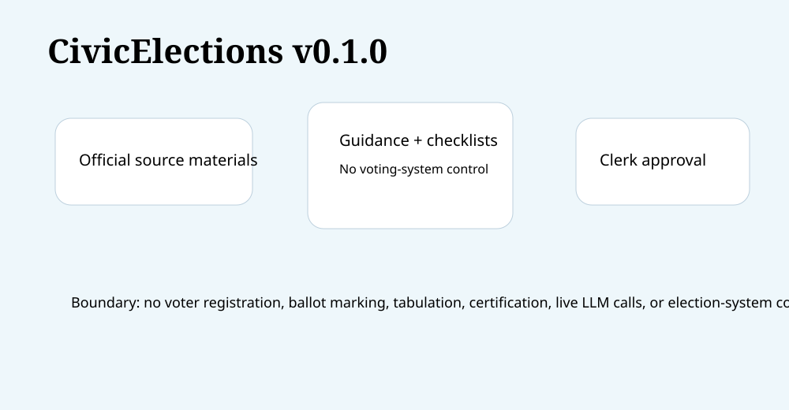

Ships Today
Deterministic election administration support helpers.
CivicSuite / CivicElections
CivicElections v0.1.1 helps clerks prepare voter guidance, filing checklists, training answers, ballot-summary drafts, campaign-finance summaries, canvass checklists, and accessibility reviews.
Deterministic election administration support helpers.
Election officials approve all public election information.
No voter registration, ballot marking, tabulation, election conduct automation, official certification, live LLM calls, or election-system connector runtime ships in v0.1.1.

Dependency: civiccore==0.3.0. Repo: CivicSuite/civicelections.